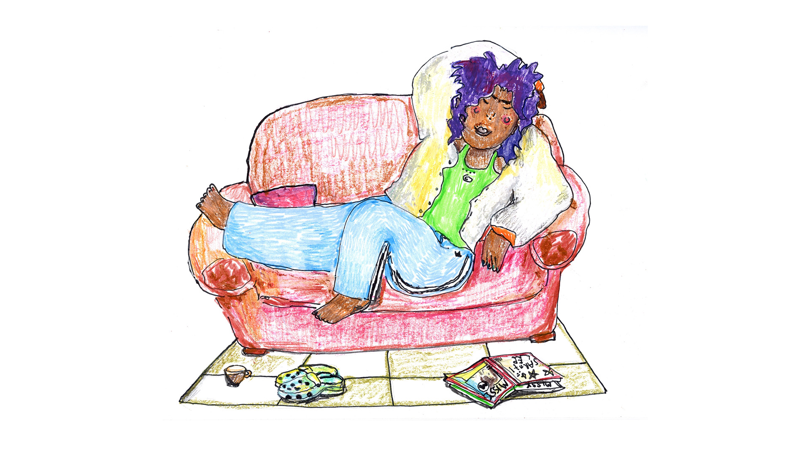
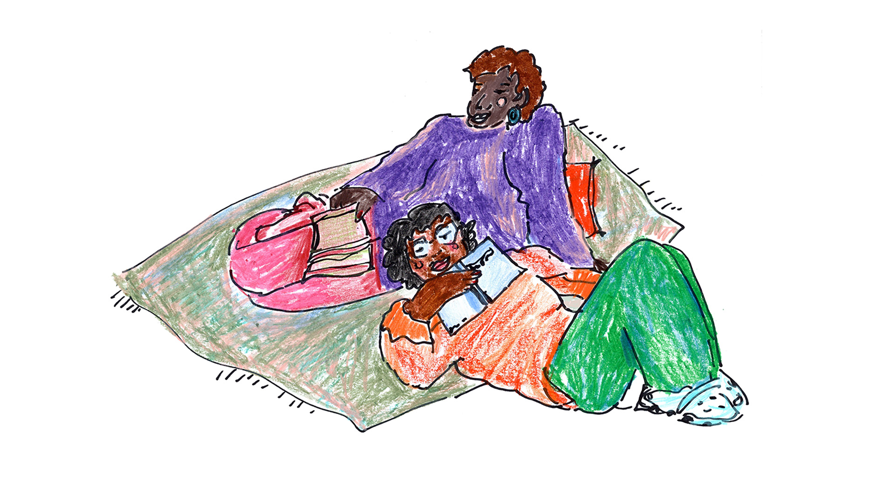
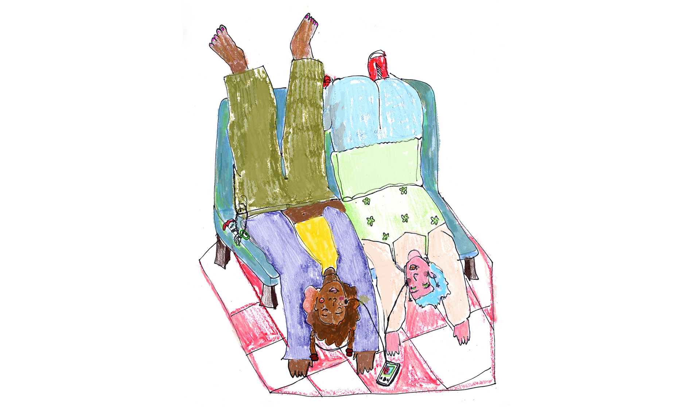
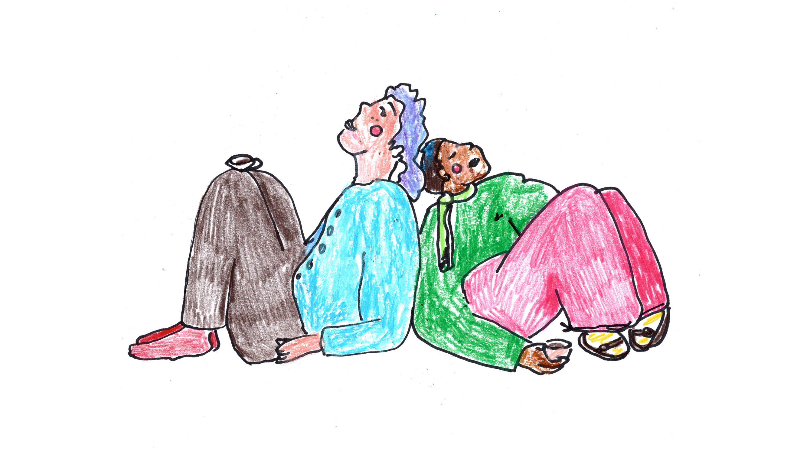
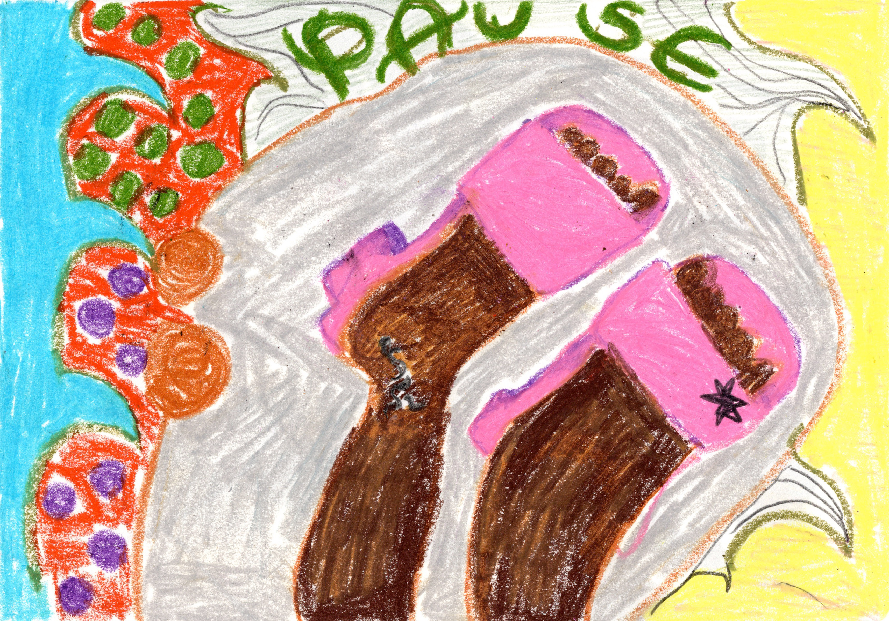

Illustrationen für eine Seminarreihe Pause vom Patriarchat in dem queer-feministischen Bildungshaus Lila_bunt in Zülpich. Lila_Bunt ist ein kollektiv-geführter Betrieb, der vor allem für FLINTA* Personen Fortbildungen, Bildungsurlaube, Seminare, Vernetzungstreffen und politische & kulturelle Veranstaltungen anbietet und empfängt.
Lila_bunt soll ein möglichst inklusiver Ort werden, der unter Beteiligung vieler Menschen, Generationen und Positionen die Notwendigkeit feministischer Bildungsorte weiterdenkt und lebt.




